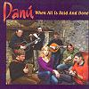

Celtic Lyrics Corner > Artists & Groups > Danú > When All Is Said And Done
|  |
When All Is Said And Done
(2005) |
| Tracks : |
1. The Highest Hill
2. Follow On 3. The Peacock's Feather 4. Ó Dheara, 'Sheanduine 5. Around The House 6. Farewell, Angelina 7. The Coachman's Whip 8. An Cailín Deas Crúite Na mBó 9. Kilfenora 10. Only Nineteen Years Old 11. Gerry's Set 12. Pots And Kettles O |